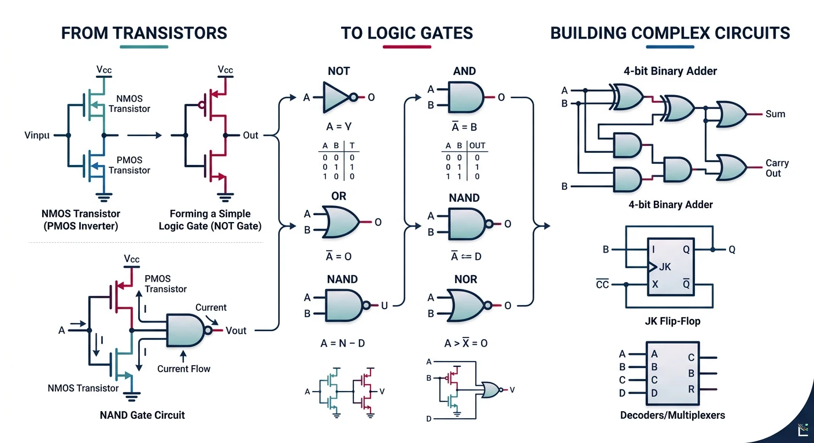
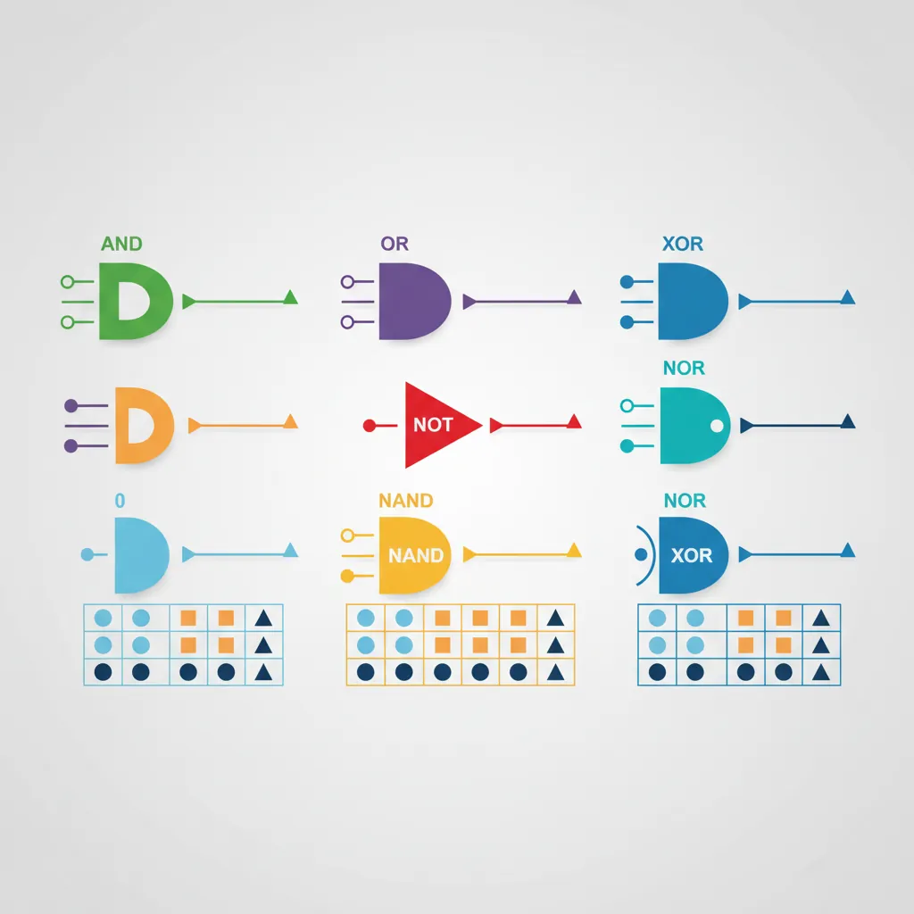
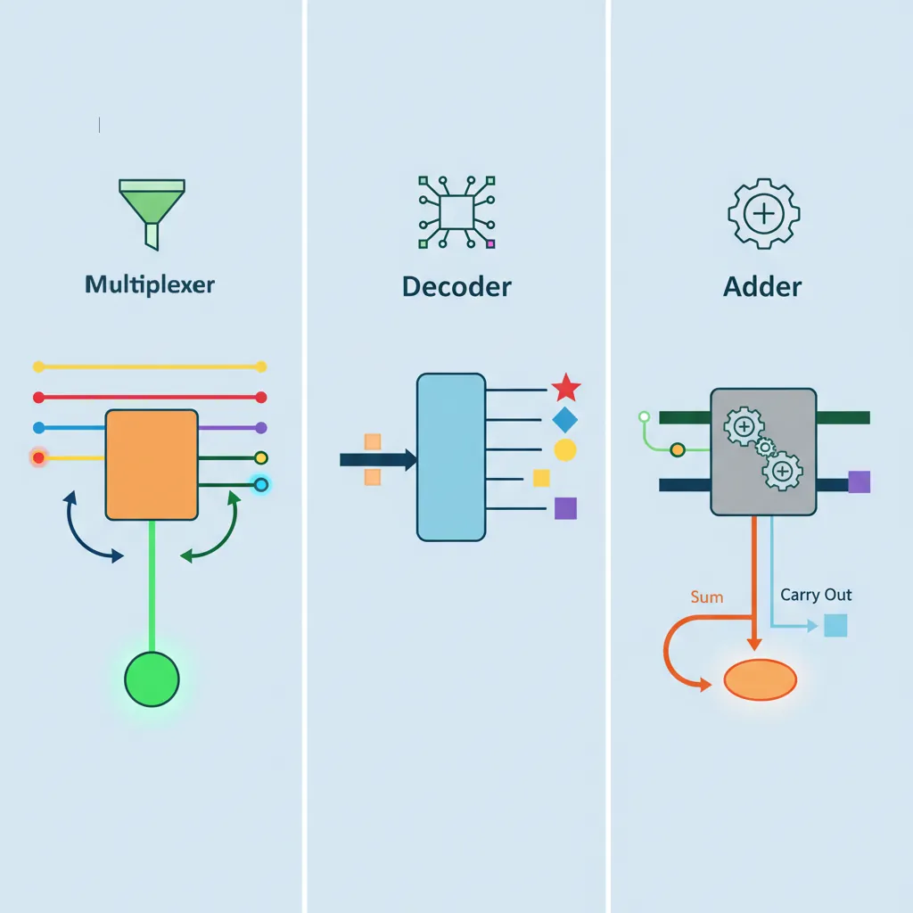
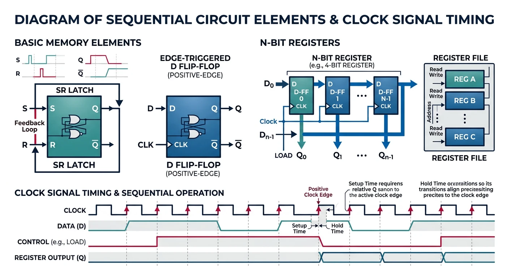
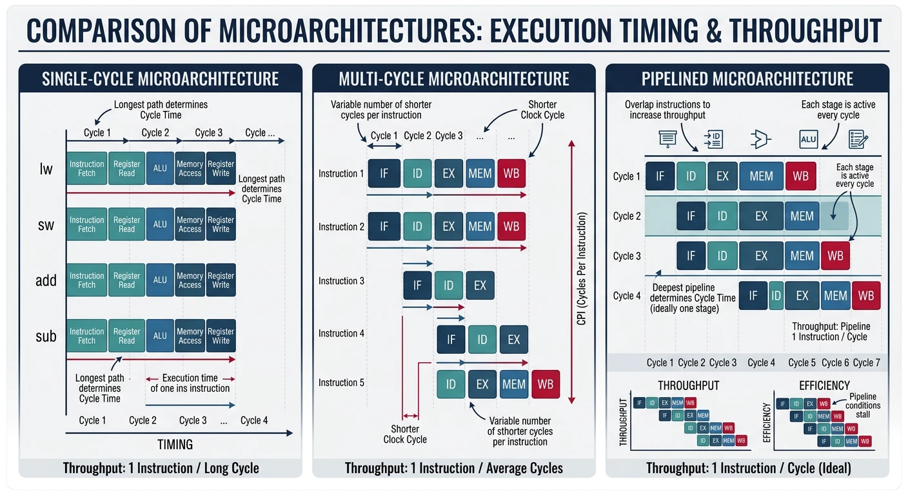

We use cookies to enhance your browsing experience, serve personalized content, and analyze our traffic.
By clicking "Accept All", you consent to our use of cookies. See our
Privacy Policy
for more information.
Digital logic forms the foundation of all computer hardware. Every operation a CPU performs—from simple addition to complex floating-point calculations—ultimately relies on combinations of basic logic gates.

From transistors to logic gates: the building blocks of digital hardware
Series Context: This is Part 2 of 24 in the Computer Architecture & Operating Systems Mastery series. Building on Part 1's system overview, we now dive into the hardware building blocks.
In this guide, we'll build up from the simplest components—logic gates—to complete CPU subsystems. By the end, you'll understand how billions of transistors combine to form the brain of your computer.
The Building Analogy
Real-World Analogy
Think of building a CPU like building with LEGOs:
Logic Gates — Individual LEGO bricks (the smallest pieces)
Combinational Circuits — Small assemblies (a wheel, a window)
Sequential Circuits — Assemblies with moving parts (a door that opens)
Datapath — Major sections (the frame of a car)
CPU — The complete model (a finished LEGO car)
Each level uses the pieces from the level below!
Logic Gates: The Fundamental Building Blocks
A logic gate is an electronic circuit that performs a basic logical operation. It takes one or more binary inputs (0 or 1) and produces a single binary output based on a specific rule.

Standard logic gate symbols and their truth tables
Key Insight: Every computation your computer performs—from watching videos to running AI—ultimately reduces to billions of logic gates flipping between 0 and 1, billions of times per second!
The Three Basic Gates: AND, OR, NOT
All digital logic can be built from combinations of these three fundamental gates:
NOT Gate (Inverter)
The simplest gate—it flips the input. If input is 1, output is 0, and vice versa.
Symbol: Truth Table:
─┬─┐ ┌───┬───┐
A ──────│ ○────Q │ A │ Q │
─┴─┘ ├───┼───┤
│ 0 │ 1 │
Q = NOT A │ 1 │ 0 │
Q = Ā (A bar) └───┴───┘
Q = !A (programming)
AND Gate
Outputs 1 only if both inputs are 1. Think of it as: "Both must be true."
Symbol: Truth Table:
─┬───┐ ┌───┬───┬───┐
A ──────│ │ │ A │ B │ Q │
─┤ ├───Q ├───┼───┼───┤
B ──────│ │ │ 0 │ 0 │ 0 │
─┴───┘ │ 0 │ 1 │ 0 │
│ 1 │ 0 │ 0 │
Q = A AND B │ 1 │ 1 │ 1 │
Q = A · B └───┴───┴───┘
Q = A && B (programming)
Real-World AND Gate
A car engine that starts only when:
Key is turned (Input A = 1) AND
Brake pedal is pressed (Input B = 1)
Both conditions must be true for the engine to start (Output = 1).
OR Gate
Outputs 1 if at least one input is 1. Think of it as: "Either (or both) can be true."
Symbol: Truth Table:
─┬───╲ ┌───┬───┬───┐
A ──────│ ╲ │ A │ B │ Q │
─┤ )──Q ├───┼───┼───┤
B ──────│ ╱ │ 0 │ 0 │ 0 │
─┴───╱ │ 0 │ 1 │ 1 │
│ 1 │ 0 │ 1 │
Q = A OR B │ 1 │ 1 │ 1 │
Q = A + B └───┴───┴───┘
Q = A || B (programming)
Universal Gates: NAND and NOR
NAND (NOT-AND) and NOR (NOT-OR) are called universal gates because any logic function can be built using only NAND gates or only NOR gates!
NAND Gate
NAND = NOT(AND)
Truth Table: Building other gates from NAND:
┌───┬───┬───┐
│ A │ B │ Q │ NOT from NAND: A ──┬──[NAND]──Q
├───┼───┼───┤ └───┘
│ 0 │ 0 │ 1 │ (Connect same input to both)
│ 0 │ 1 │ 1 │
│ 1 │ 0 │ 1 │ AND from NAND: A ──┬──[NAND]──┬──[NAND]──Q
│ 1 │ 1 │ 0 │ B ──┘ └───┘
└───┴───┴───┘
Why NAND is King: In real chip manufacturing, NAND gates are the cheapest and fastest to produce. Most modern CPUs are built primarily from NAND gates, with other gates synthesized from them!
NOR Gate
NOR = NOT(OR)
Truth Table:
┌───┬───┬───┐
│ A │ B │ Q │
├───┼───┼───┤
│ 0 │ 0 │ 1 │ ← Only outputs 1 when BOTH inputs are 0
│ 0 │ 1 │ 0 │
│ 1 │ 0 │ 0 │
│ 1 │ 1 │ 0 │
└───┴───┴───┘
XOR and XNOR Gates
XOR (Exclusive OR)
Outputs 1 when inputs are different. Essential for arithmetic and comparison!
Truth Table: Applications:
┌───┬───┬───┐
│ A │ B │ Q │ • Addition (carry detection)
├───┼───┼───┤ • Parity checking
│ 0 │ 0 │ 0 │ • Comparison (are inputs different?)
│ 0 │ 1 │ 1 │ • Encryption (XOR with key)
│ 1 │ 0 │ 1 │ • Toggle bits
│ 1 │ 1 │ 0 │
└───┴───┴───┘
Q = A ⊕ B (XOR symbol)
Q = A ^ B (programming)
XOR Does Binary Addition!
Notice how XOR matches single-bit addition (ignoring carry):
Combinational circuits are circuits where the output depends only on the current inputs—they have no memory. The same inputs always produce the same outputs.

Key combinational circuits: multiplexers, decoders, and adders
Multiplexers (MUX) & Demultiplexers
A multiplexer is like a data switch—it selects one of many inputs to pass through to a single output.
2:1 Multiplexer (MUX)
I₀ ─────┐
├─────► Q
I₁ ─────┘
│
S ──────┘ (Select line)
If S = 0, Q = I₀
If S = 1, Q = I₁
Boolean: Q = (I₀ · S̄) + (I₁ · S)
MUX Analogy: TV Input Selector
Your TV's input selector is a real-world multiplexer:
Inputs: HDMI 1, HDMI 2, USB, Antenna
Select: The input button on your remote
Output: What appears on screen
Only one input passes through at a time based on your selection!
CPUs Use MUXes Everywhere! Inside a CPU, multiplexers route data between registers, select ALU operations, and control what goes on the data bus. A modern CPU has millions of MUXes!
Adders: The Heart of Arithmetic
Half Adder
Adds two single bits, producing a sum and carry:
Half Adder Circuit:
Truth Table:
A ────┬────[XOR]─── Sum ┌───┬───┬─────┬───────┐
│ │ A │ B │ Sum │ Carry │
└───┬ ├───┼───┼─────┼───────┤
B ────────┼──[AND]─ Carry │ 0 │ 0 │ 0 │ 0 │
────┘ │ 0 │ 1 │ 1 │ 0 │
│ 1 │ 0 │ 1 │ 0 │
Sum = A ⊕ B │ 1 │ 1 │ 0 │ 1 │
Carry = A · B └───┴───┴─────┴───────┘
Full Adder
Adds two bits plus a carry-in. Essential for multi-bit addition!
The Ripple Problem: Carries must "ripple" through each adder—the last sum bit can't be computed until all previous carries are known. For a 64-bit adder, this creates significant delay. Modern CPUs use carry-lookahead adders to compute carries in parallel!
Arithmetic Logic Unit (ALU)
The ALU is the computational heart of the CPU. It performs arithmetic (add, subtract, multiply) and logic (AND, OR, XOR, compare) operations.
Simple 1-bit ALU:
┌─────────────────────────────────────┐
A ─────┤ │
│ ┌─────────┐ │
B ─────┤────│ AND ├───┐ │
│ └─────────┘ │ │
│ ┌─────────┐ │ ┌──────┐ │
├────│ OR ├───┼───►│ MUX │──────┼──► Result
│ └─────────┘ │ │ 4:1 │ │
│ ┌─────────┐ │ └──┬───┘ │
├────│ Adder ├───┘ │ │
│ └─────────┘ │ │
│ ┌─────────┐ │ │
└────│ SLT ├───────────┘ │
└─────────┘ │
│
Operation ─────────────────────────────────►─┘
(2-bit select)
Operation │ Output
──────────┼────────
00 │ A AND B
01 │ A OR B
10 │ A + B
11 │ SLT (set less than)
Real ALU: MIPS 32-bit
Hardware Example
A MIPS CPU's ALU supports these operations:
ALU Control
Operation
0000
AND
0001
OR
0010
ADD
0110
SUBTRACT
0111
Set Less Than
1100
NOR
Sequential Circuits: Adding Memory
Sequential circuits have outputs that depend on both current inputs and past inputs (state). They can "remember" information—this is how computers store data!

Sequential circuit elements: latches, flip-flops, and registers synchronized by clock signals
Flip-Flops & Latches
SR Latch (Set-Reset)
The simplest memory element—it can store 1 bit:
SR Latch (using NOR gates):
S ────[NOR]─┬─── Q
│ │
└────┼───┐
│ │
R ────[NOR]─┴───┴── Q̄
S │ R │ Q (next)
──┼───┼──────────
0 │ 0 │ No change (hold)
0 │ 1 │ 0 (reset)
1 │ 0 │ 1 (set)
1 │ 1 │ Invalid! (forbidden)
D Flip-Flop (Data Flip-Flop)
The most common memory element in CPUs—stores whatever is on D when the clock rises:
D Flip-Flop:
┌────────┐
D ───┤D Q ├─── Q
│ │
CLK ─►│> │
│ Q̄ ├─── Q̄
└────────┘
On rising edge of CLK:
Q takes the value of D
(Q = D)
Between clock edges:
Q holds its value
The Clock is the CPU's Heartbeat: The clock signal synchronizes all flip-flops in the CPU. At each clock tick, data moves from one stage to the next. A 4 GHz CPU has 4 billion clock ticks per second!
Registers: Fast Storage Inside the CPU
A register is a group of flip-flops that store multiple bits:
4-bit Register (using D flip-flops):
D₃ D₂ D₁ D₀ (4-bit input)
│ │ │ │
▼ ▼ ▼ ▼
┌───┐ ┌───┐ ┌───┐ ┌───┐
│ D │ │ D │ │ D │ │ D │
CLK ─►│ F │►│ F │►│ F │►│ F │
│ F │ │ F │ │ F │ │ F │
└─┬─┘ └─┬─┘ └─┬─┘ └─┬─┘
│ │ │ │
Q₃ Q₂ Q₁ Q₀ (4-bit output)
On each clock edge: Q[3:0] = D[3:0]
CPU Registers in Practice
x86-64 Architecture
Modern x86-64 CPUs have these general-purpose registers:
1. Fetch instruction from memory at address PC
2. Read registers $t1 and $t2 from register file
3. ALU adds the two values
4. Result written back to register $t0
5. PC incremented to next instruction
Clock Cycle:
─────┬─────────┬─────────┬─────────┬─────────┬─────
│ FETCH │ DECODE │ EXECUTE │ WRITE │
│ │ READ │ (ALU) │ BACK │
─────┴─────────┴─────────┴─────────┴─────────┴─────
Microarchitecture: Putting It All Together
Microarchitecture is the specific implementation of an ISA (Instruction Set Architecture). Different microarchitectures can execute the same instructions in different ways.

Single-cycle vs multi-cycle vs pipelined microarchitecture execution
ISA vs Microarchitecture:
ISA = WHAT instructions the CPU understands (x86-64, ARM, RISC-V)
Microarchitecture = HOW the CPU executes those instructions
Intel Skylake and AMD Zen both run x86-64 (same ISA) but have different microarchitectures!
Single-Cycle vs Multi-Cycle vs Pipelined
Design
Clock Cycles/Instruction
Clock Speed
Throughput
Single-Cycle
1
Slow (must fit longest instruction)
Low
Multi-Cycle
3-5 (varies)
Faster clock
Medium
Pipelined
1 (after pipeline fills)
Fast clock
High
Pipelining: Overlapping Instruction Execution
Without pipelining (single-cycle):
Instr 1: ████████████████████
Instr 2: ████████████████████
Instr 3: ████████████████████
With 5-stage pipelining:
Instr 1: IF─┬─ID─┬─EX─┬─MEM┬─WB
Instr 2: IF─┬─ID─┬─EX─┬─MEM┬─WB
Instr 3: IF─┬─ID─┬─EX─┬─MEM┬─WB
Instr 4: IF─┬─ID─┬─EX─┬─MEM┬─WB
Instr 5: IF─┬─ID─┬─EX─┬─MEM┬─WB
IF = Instruction Fetch, ID = Decode, EX = Execute, MEM = Memory, WB = Write Back
5 instructions complete in 9 cycles instead of 25!
Exercises
Practice Exercises
Hands-On
Gate Practice: Build a 2:1 MUX using only NAND gates
Truth Table: Create the truth table for: Q = (A AND B) XOR C
Adder Design: Trace through a 4-bit ripple-carry adder computing 0110 + 0101
ALU Operation: What ALU control signals would you use for A - B?
Pipeline Analysis: If a 5-stage pipeline has a 1ns clock period, how long to execute 100 instructions?
# Simulate a simple ALU in Python
def simple_alu(a, b, operation):
"""
Simple 4-operation ALU
operation: 0=AND, 1=OR, 2=ADD, 3=SUB
"""
if operation == 0:
return a & b
elif operation == 1:
return a | b
elif operation == 2:
return a + b
elif operation == 3:
return a - b
# Test it
print(f"5 AND 3 = {simple_alu(5, 3, 0)}") # 1
print(f"5 OR 3 = {simple_alu(5, 3, 1)}") # 7
print(f"5 + 3 = {simple_alu(5, 3, 2)}") # 8
print(f"5 - 3 = {simple_alu(5, 3, 3)}") # 2
Conclusion & Key Takeaways
You now understand how transistors combine to form gates, gates combine to form circuits, and circuits combine to form a working CPU.
What You've Learned:
Logic Gates — AND, OR, NOT, NAND, NOR, XOR, XNOR and their truth tables
Universal Gates — NAND/NOR can build any other gate
Combinational Circuits — MUXes, half/full adders, ripple-carry adders, ALU